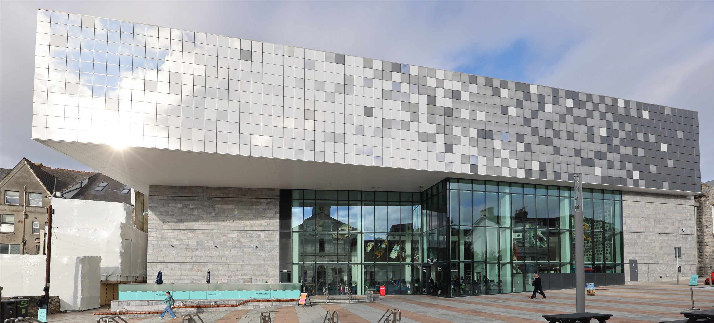

Atrium Field Study & Naval Archive Mapping
Documented the spatial layout of the fourteen figureheads suspended in Plymouth, photographing lighting angles, carving proportions, and cross referencing Royal Navy ship histories and National Maritime Museum draught references.
OUTPUT: Verified 14 ship historical roster with launch years, carving themes, and spatial reference sheets.
